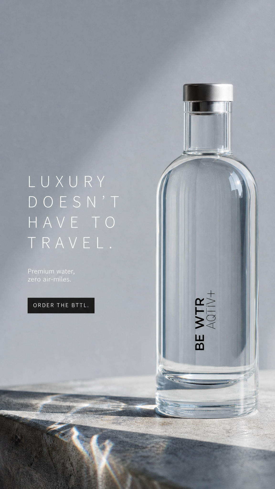
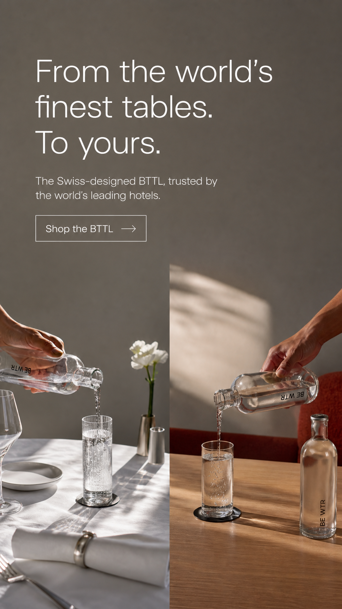
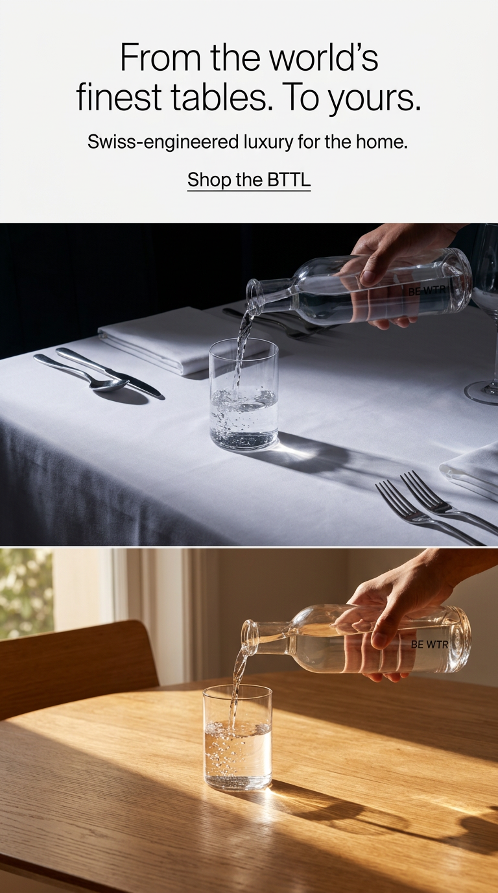

Des agents qui font le travail, branchés sur vos propres outils. Vous ne gérez aucune plateforme de plus : vous nous donnez les accès, les agents s'occupent du reste. Le set-up et la maintenance sont offerts — vous ne payez qu'à l'usage.
Avant de proposer quoi que ce soit, voici ce qu'on a retenu de votre brief et de votre situation. Si une lecture est à côté, on la corrige ensemble.
La notoriété via les hôtels & restaurants — puis le grand public (Suisse, UAE).
La demande est là. Le défi : produire partout, sans surcharger les équipes.
Visibilité SEO/GEO · calendrier de contenu · studio de production · reporting.
Activable pilier par pilier, pour séquencer à votre rythme.
Là où vous en êtes, et là où on vous emmène. Même travail, deux mondes — à gauche aujourd'hui, à droite avec les agents.
site B2B sur HubSpot ; le D2C reste à construire
B2B + D2C sous bewtr.com, deux stratégies SEO/GEO
montage, captions, déclinaisons — chronophage
brouillons à la charte, prêts à valider
elle fait tout + forme les locaux
le global produit, le local ajuste — vous validez
une base à muscler sur Google et les IA
site, presse & social — et la citation IA suivie
chiffres séparés, lus trop tard
une note mensuelle qui dit quoi faire ensuite
Deux piliers, sur un seul domaine : l'Agent BE WTR (et ses sous-agents) et l'AI Studio. Voilà toute la cible.
Un agent global qui orchestre 3 sous-agents.
L'interface self-service : supports POS & briefs Studio.
Avant de chiffrer quoi que ce soit, on a passé votre présence SEO/GEO B2B France au crible — et comparée à votre concurrent direct. Voici ce qu'on a trouvé. Diagnostic de départ, à affiner ensemble.
BE WTR a la même autorité de domaine que Castalie — son concurrent B2B français direct — mais 11× moins de mots-clés et 4× moins de trafic. Le problème n'est pas la notoriété : la marque est forte (B Corp, Red Dot, Accor / Marriott / Ritz, 736 domaines référents). C'est un problème d'exécution SEO / contenu. La matière première est là, inexploitée.
BE WTR vs Castalie — concurrent B2B France direct. Le score global est à prendre avec des pincettes (détail par pilier dans le rapport).
31 des 32 mots-clés ont un volume de recherche nul en France (« solution eau durable pour bureau » = 0). Personne ne cherche comme ça. On a reconstruit la vraie demande — carafe filtrante (12 100), filtre eau robinet (9 900), fontaine à eau (18 100), adoucisseur (40 500)… → 453 mots-clés exploitables.
Rien sur l'accueil ni sur les pages systèmes → handicap direct pour le GEO (citations par les IA). Quick win à fort impact.
Quelques articles déjà bien ciblés (fontaine gastronomie, eau filtrée brasserie, hôtel 5 étoiles), des H2 en questions. Il manque les réponses extractives ~40 mots et les données chiffrées sourcées.
Rien ne renforce les pages service aujourd'hui — tout est à construire à ce niveau.
La demande transactionnelle « fournisseur eau premium restaurant / hôtel » n'existe quasiment pas en search. La stratégie B2B gagnante : capter « fontaine à eau entreprise / professionnelle » (volume réel) + créer la demande via du contenu de considération (microplastiques, chlore, coût bouteilles vs filtration) où BE WTR est légitime + dominer le GEO.
Deux piliers. D'un côté l'Agent BE WTR — un agent global marketing & commercial qui orchestre trois sous-agents spécialisés. De l'autre, la Plateforme (AI Studio). Chaque schéma se lit de gauche à droite : entrée → l'agent → vous → résultat.
Un agent global marketing & commercial — il orchestre 3 sous-agents.
Un seul point d'entrée pour vos équipes. L'agent global oriente la demande vers le bon sous-agent, et fait circuler la mesure vers le contenu. Le détail de chaque sous-agent ci-dessous.
Un seul agent rend BE WTR visible — sur Google comme dans les réponses des IA — et arme vos RP. En continu, validé par vos équipes.
L'agent assemble ce qui existe, anticipe les temps forts et recommande le mix. Il programme — il ne génère pas. Branché sur Monday.com.
Un agent rassemble tout ce que les autres produisent, écrit la lecture du mois et recommande la suite. Le chiffre est calculé, jamais inventé.
L'interface que vos équipes utilisent — supports POS & briefs Studio.
Deux besoins très différents, donc deux plateformes dans une seule interface. Toutes deux branchées sur votre banque d'assets, l'humain toujours dans la boucle.
Chaque marché crée ses propres supports, sans déborder de la charte. Un parcours guidé — pas un outil de design.
Pour tout le reste — resizing, langues, habillage, voix… Les demandes évoluent sans cesse, donc on passe par un brief, pas un parcours figé.

Static · 1
Static · 2
Static · 3Notre modèle est simple. On ne facture ni le set-up, ni la maintenance — c'est offert. Vous payez uniquement à l'usage, à l'unité, sur un volume mutualisé pour tous vos marchés*. Cliquez un pilier pour le détail.
Vous ne payez que le contenu réellement publié. Le tarif unitaire se cale ensemble selon vos volumes — set-up et pilotage à notre charge.
Vous ne payez que ce que vous générez. Grille unitaire (génération POS, brief Studio) à caler ensemble.
Le set-up et la maintenance sont offerts. Vous payez uniquement à l'usage, à l'unité — sur un volume mutualisé pour tous vos marchés.
Build des agents & de la plateforme, connexion à vos outils — à notre charge.
Run des agents, monitoring, upkeep de la plateforme — inclus.
Par article publié, par génération Studio. Volume mutualisé sur tous les marchés.
Vous ne payez que ce que vous consommez. La grille de tarifs unitaires se cale ensemble selon vos volumes — aucun coût de set-up ni de maintenance, sur aucun marché.
* Pensé pour vos 9 marchés (France pilote → UAE, CH, UK, SG, HK, TH, MA, CA) : set-up & maintenance restent offerts partout, et l'usage reste mutualisé — un seul volume, pas multiplié par pays. Passer à l'échelle n'ajoute aucun coût de structure.
Une cible claire : opérationnel en septembre 2026, par incréments validés. On ne livre pas tout d'un bloc.
Trois profils complémentaires — pas une agence de bras. De la marque et du commercial (FMCG, D2C) à l'ingénierie qui fait tourner les agents à grande échelle : on pense et on opère.
La marque, des deux côtés
Quinze ans à construire des marques — d'abord en agence sur de grandes maisons FMCG, puis comme opérateur de sa propre marque D2C. Il la pense autant qu'il la vend.
De la stratégie au chiffre d'affaires
Quinze ans entre marketing et développement commercial dans la FMCG, doublés d'une expérience d'entrepreneur. Il relie la vision de marque aux résultats concrets.
Bâtir des systèmes à l'échelle
Vingt ans de développement sur des systèmes critiques — chez Amazon et à la Société Générale. C'est lui qui fait tourner les agents pour de vrai, en production.
Notre garde-fou : un périmètre étroit, et de l'honnêteté sur les indicateurs.